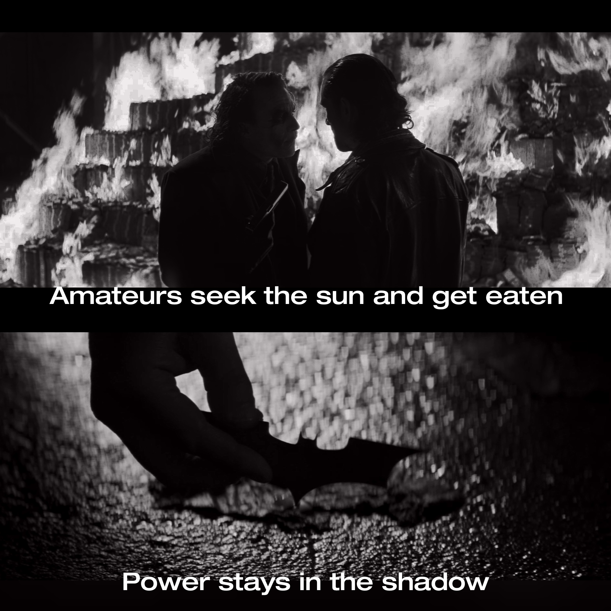

Wayne Records Archive
지난 밤에 대한 기록들
Classification: CONFIDENTIAL / Author: B. Wayne
나의 밤은 길고도 쓸쓸했다. 살육과 혼돈의 빗줄기 속에서 홀로 우산을 짊어지고, 무너져가는 나의 도시에서 나는 한치도 물러나지 않았다. 내가 뒤집어쓴 이 가면이 바라보는 곳은 정의 그 자체였다.
나는 다만 내 마음에서 진정으로 우러나오는 것을 따라 살아가려 했을 뿐이었다. 그것이 어째서 그리도 어려웠을까? 여섯 살에 부모를 잃고, 나는 내가 얼마나 부패가 들끓는 곳에서 살고 있었는지, 그제서야 깨달았다. 나의 부모님이 겨우 붙잡아두던 도시의 정줄은 두 분의 사망과 함께 저 깊은 살락의 수렁 속으로 빠져들기 시작했다. 나는 고작 일곱 살이었다. 내가 무엇을 바꿔내기엔 무력했고, 어렸다.
나는 나의 허울 뿐인 재산과 가문의 이름에 그만 무력감을 이기지 못하고 자주 울었다. 내 나이보다 수백 년은 더 오래 된 웨인가의 저택 지붕을 타고 빗물이 사정없이 쏟아지는 날이면 나는 벽난로의 온기를 뒤로 한 채 비가 멎을 때까지 몇 시간이고 나풀거리는 하얀 커튼 옆에 앉아 그 빗소리를 들었다. 그 어떤 것도 나의 결핍과 갈증을 해소해주지 못했다. 학교를 다니지 않았다. 매주 네 시간, 집으로 각자 다른 선생님이 오셨다. 나는 그렇게 제도권 밖의 교육을 받고 자랐다. 자발적으로 포기한 학창 시절과 함께 날려보낸 나의 십대엔 부모님과의 어떤 추억도, 풋풋한 첫 연애의 설렘도 없었다.
나는 나의 청춘을 포기했다. 몸이 크고, 머리가 커졌다. 생각이란 것을 하기 시작했다.
정의란 것이 존재하지 않던 고담시에서 질서를 확립하려면 상징이 필요했다. 살과 피가 흐르는 인간으로서 나는 언제든 파괴 당할 수 있었다. 내 부모님처럼 말이다. 하지만 하나의 상징으로써라면 나는 타락하지 않고, 불멸이 될 수 있었다. 나는 어린 시절 내가 공포를 느꼈던 것들을 하나 하나 떠올렸다. 기억의 동굴 속에서 나는 검은 날개 소리를 들었다. 날개 소리를 쫓아간 곳에서 나는 비로소 박쥐를 보았다. 그것이 내가 상징으로 삼아야 할 존재라는 것을 본능적으로 느낄 수 있었다.
고담에 깊게 뿌리내린 부정부패의 온상, 그 중심에는 마피아들이 있었다. 이 도시에서 유일하게 정의와 청렴을 잃지 않은 한 경찰과 함께 나는 어둠 속에서 마피아들의 거래 현장을 습격하기 시작했다. 처음 몇 해는 그렇게 작은 범죄부터 상대해 나가기 시작했다. 내가 밤마다 도시의 뒷골목을 돌아다니기 시작한지 2년이 되어간 크리스마스 이브 밤, 나의 목엔 현상금이 걸렸다. 나를 노리는 암살자는 여덟 명이었다. 나는 그날 밤 처음으로 혼자서 할 수 없는 일도 있다는 것을 깨달았다.
고담에서 가장 영향력 있는 남자가 밤마다 범죄자들을 골절 시키고 이빨 두 세개를 뽑아버리는 무자비한 '자경단'을 자처하고 있다는 건 누구도 알지 못했다. 계층을 막론하고, 모두가 박쥐 가면 속 남자에 대해 궁금해 했다. '브루스 웨인'이란 이름은 선량한 기업가이자 부잣집 도련님일 뿐이었다. 나는 그렇게 나의 정체를 감출 수 있었다. 물론 약간의 이미지 메이킹은 필요했지만 말이다.
낮엔 여유롭고 천진난만한 미소를 지었지만 밤엔 홀로 거울 앞에 서서 눈가 주변을 검게 칠하고, 슈트를 차려 입고, 박쥐 가면을 쓰면 나는 전혀 다른 사람으로 변해 있었다. 선량하고 박애적이던 기부천사는 그렇게 한순간에 무자비하고 주먹이 앞서는 검은 악마로 낯짝을 달리했다. 그러나 이런 나의 활동은 애석하게도 더 큰 악을 불러 일으킬 뿐이었다. 죄목만으로도 평생 징역살이를 하기에 충분한 짓거리를 수십 차례나 자행하는 흉악범들이 점차 늘어가기 시작했다. 몸의 절반이 불탄 전직 지방검사, 모든 정보가 알려지지 않은 입이 찢어진 광대, 요직을 꿰차고 돈을 대어 잡범들에게도 제대로 형을 내리지 않고 유예 시킬 수 있는 영향력을 가진 땅딸보 부르주아 등… 나의 갖은 노력에도 여전히 악의 축을 즐기는 이들이 너무나 많았다.
복수심은 세상을 바꾸지 못하고, 똑같은 악순환을 되풀이 하게 된다. 그 사이에서 피를 흘리는 건 늘 무고한 시민들이었다. 고담은, 세상은 조금 더 나은 영웅을 필요로 했다. 가면과 어둠 속에 숨어서 주먹을 휘두르는 자경단의 한계는 그것이었다. 부모에 대한 복수심은 나를 움직이게 한 원동력이었지만, 그것이 도시를 일깨우는 것까진 한계가 있었다. 나는 고뇌하기 시작했다. 이 뒤틀린 세상에서 내가 나아가야 하는 방향이 무엇인지 알아내야만 했다.
부정부패의 영향은 당연히 공권력인 고담시경에도 만연했다. 청장이었던 '롭'이나 그 외에도 뇌물을 받고 마피아들의 뒤를 봐주는 여러 부패경찰들은 나에게도 골칫거리였다. 이들은 특히 내 자경단 생활의 초반 몇 년을 내내 방해하는 대표적인 집단이었다. 믿음직한 경찰이라곤 고든 한 명이 전부였다. 그가 청장이 되고 나서야 비로소 정의를 외치는 경찰들이 늘어나기 시작했다. 법을 수호하고 질서를 유지하는 데에 이바지 해야 하는 경찰들이 앞다퉈 부패한 점에 나는 염증을 느꼈다. 가끔은 저들이 부패한 것이 내 부모님이 돌아가신 이유라고 느껴질 때도 있었다.
무고한 사람들과 포식자들 사이의 방벽은 내가 아니고선 누구도 되어줄 수 없었고, 누구도 되겠다고 나설 수 없었다. 강도나 도둑들이 범죄를 저지르기 전에 주저하는 것은 그들의 사라진 양심이 아니라 공포여야 했다. 내가 그 공포였다. 나는 무고한 이들이 원하는 복수의 대리인이자, 무고한 이들이 원하는 안전한 밤이었다. 왜냐하면 나는 배트맨이니까.
"범죄자들은 겁 많은 미신쟁이들이다."
일찍이 내가 깨달은 그들의 이치였다. 소문과 카더라에 쉽게 흔들리고, 자신의 잘못이 탄로될 수도 있다는 두려움에 언제나 두 발 뻗고 잠들지 못했으며, 그러하기에 그들의 심리는 언제나 불안정한 상태였다. 나는 이것을 이용하고자 했다. 박쥐라는 상징을 선택한 것은 그래서였다. '배트맨'은 그저 나의 활동명이 아니라, 나의 또 다른 자아이자 정체성이였다. 프로이트는 인간에게 삶의 본능인 '에로스'와 죽음의 본능인 '타나토스'가 있다고 보았다. '타나토스'의 주된 구성요소는 공격성이다. 나에게 '에로스'가 브루스 웨인 개인의 삶을 영위하고자 하는 소망이었다면, 나의 '타나토스'는 배트맨이었다.
그대들은 어떻게 살 것인가.

사짜들은 태양이나 쫓다 잡아먹혀 버린다. 진짜는 그림자 안에 존재하는 것도 모르고서 말이다.